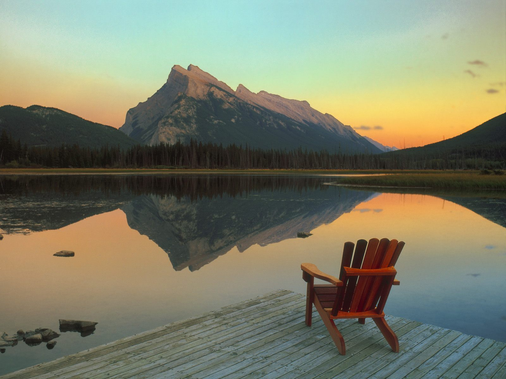
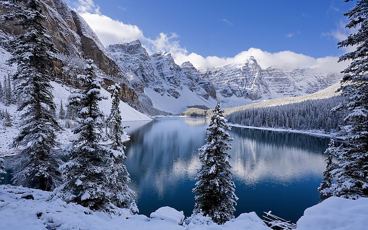

13 Canadian bucket list sights for the nature lover
Mountains. Forests. Deserts. Glaciers. Beaches.It would take several lifetimes to see all the natural wonders on our planet, but if you're looking for a bucket list of some of the best sights Mother Nature has to offer, look no further than your own backyard.
Here are some of Canada's most breathtaking natural sights to see before you kick the bucket.
Read More...
Canada's 10 Most Famous Cities
The best-known cities in Canada cover a range of destination types that reflect the diversity of the inhabitants and range from sophisticated urban locales to more laid-back municipalities. As each city has its own unique personality, Canada offers something for every type of visitor to explore.
Read More...

Check out Canada’s Animals!
With 200 species of mammals, 462 bird species, and a hugely diverse range of oceanic life, Canada is an animal-lover’s paradise. If it’s your first time visiting the 2nd largest country in the world and you’re keen to get a glimpse of the wildlife, we’ve listed 10 animals below that you might want to see on your trip.
Read More...